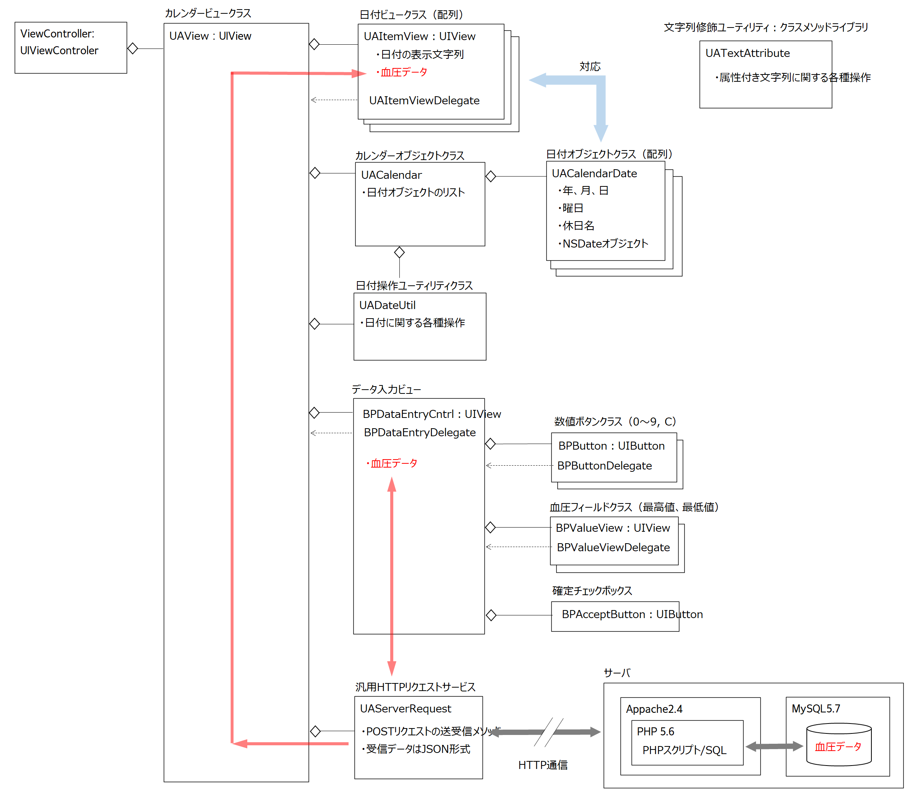
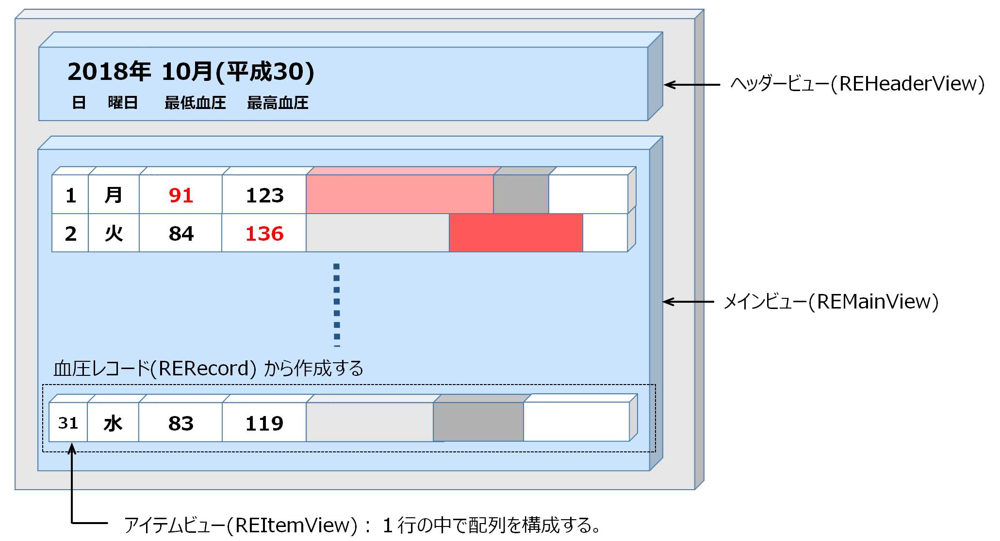

血圧管理カレンダー
カレンダーに血圧を入力して健康管理に役立ててみる。
動作確認済み: macOS 10.14.6 / Xcode 11.3.1
Object-Cで作成した血圧管理カレンダーと同等のアプリケーションをswiftで作成した。
画像をクリックすると動画が表示されます。
血圧の入力方法
日付を選択し（青い枠線で囲まれる）入力ボタンを押す、または日付をダブルクリックすれば、その日の血圧入力シートが開く。
キーボード、または血圧入力シートの数字ボタンをクリックして血圧を入力する。確定フラグをオンにし登録ボタンを実行すると血圧データはデータベースに登録される。入力済みの日は日付が丸印で囲まれる。確定フラグをオフで登録した場合は、データは登録されるが、入力未完了というステータスになる。
月間血圧一覧表の表示
一覧表示ボタンをクリックして、その月の血圧の一覧表を表示する。血圧は棒グラフ化し状態が一目で把握できるようにする。高血圧（血圧値が標準的な基準値を超えている）場合、値とグラフの色を変える。
処理方式
クライアント/サーバ方式とする。アプリケーションからサーバにHTTPリクエストを送り、サーバはJSON形式のレスポンスデータを返す。データベースはMySQLで実装し、PHPスクリプトでデータの参照・更新を行う。
Webサーバー：Apache2.4 & PHP5.6
データベース：MySQL5.7
クラス構造図
月間血圧表ウィンドウ
1ヵ月分の血圧データーから月間血圧一覧表を作成する。表はビューの上にビューを重ねるという方法で作成する。
